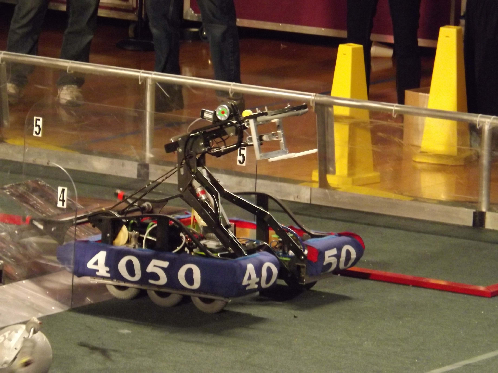
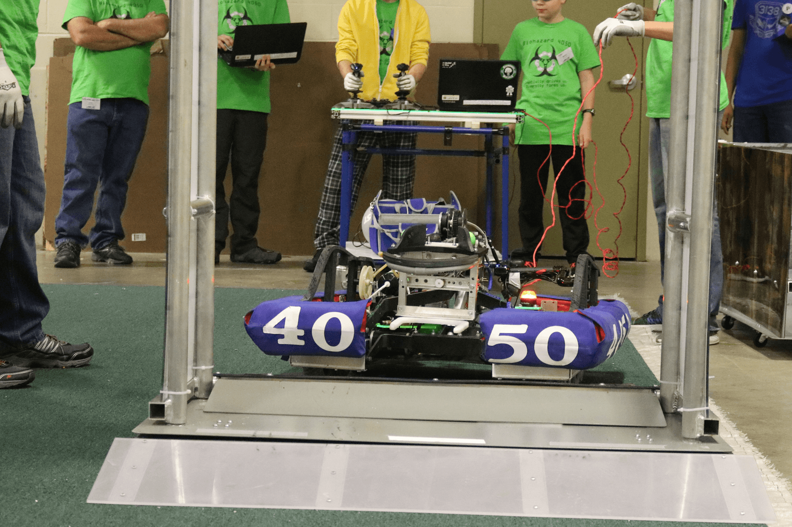

"We Do Robots."
Tada!

About Us
Biohazard 4050 is our FRC (FIRST Robotics Competition) competition team. Every year in January, we are issued a challenge to design, prototype, and build a robot to complete a game challenge in only six weeks. Over the years, we’ve played basketball, shot Frisbees, climbed pyramids, launched yoga balls, and stacked FedEx totes. We attend regional competitions after the six week build season period, and play the game in hopes of attending the World Championship in St. Louis.The Franklin County 4-H Robotics Club was founded in January of 2012, and consisted of ten teenagers and several mentors who desired to participate in a Robotics Competition from FIRST (For Inspiration and Recognition of Science and Technology). The club has consistently grown, mainly teaching kids about STEM (Science, Technology, Engineering, and Math) through several FIRST programs. The club also works at Sam’s Camp, 4-H Round Up, and WITF. In 2015, the FRC Team won the Chesapeake Regional and had the opportunity to go to the World’s Competition in St. Louis, a huge milestone and accomplishment.

A summary of our years
- Our fifth year began our new approach to the build season. After heavy strategizing, we created a game plan for our new robot, “Dialga – The Steel Dragon”. Continuing in our tradition of building a practice robot, we continued to design and build after the conclusion of our build season. We attended the Pittsburgh Regional and nearly won the entire event after making it into the finals. After making further improvements, we went to the Smoky Mountain Regional and made it to the quarter-finals. We walked away with a beautiful silver metal and the Quality Award.
- With our fourth year came experience and a routine schedule. We built our towering “Anonymous” who stacked totes and recycling containers. After a disappointing appearance at the Pittsburgh Regional, we made modifications and had the opportunity to go to the Chesapeake Regional again. While there, we were selected by the top ranked alliance and won the event! This allowed us to go to the World Championship in St. Louis for the first time in our existence. We had an amazing time.
- Biohazard had grown even more, beginning an efficient scouting program and improving our build strategy. Our robot, “Toxic Lepra-Khan,” was by far our most beautiful robot thus far. This was the first year we built an identical robot for practice purposes. We then attended the Pittsburgh Regional—while there, we made the playoffs and won the Excellence in Engineering Award. Overall, a successful season.
- Biohazard 4050 was the new start for our team, with a new name and image. After growing our team significantly in numbers—by both members and mentors—we engaged in our second season. Six weeks of intense prototyping, building, and testing ensued before we and our robot, “Total Meltdown,” attended the Pittsburgh and Chesapeake Regionals, finishing in the playoffs in both events. We had greatly improved since our start a year before.
- Tech Team Franklin began their six-week build period late, with only ten members and a handful of mentors. After consistent meetings and training in electrical, mechanical, and programming, our robot “Genesis” was born. We attended the Pittsburgh Regional and, after a successful learning experience, began preparing for a new year.

This is the sponsors content
This is the resources content
This is the contact content